Halloween Shadow Puppets
Craft and stage a shadow puppet play of your favorite Halloween story or of a Halloween-inspired story you wrote.
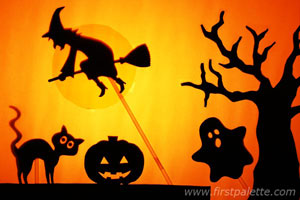
Materials
- Construction paper
- Black poster paint
- Paint brush
- Scissors
- Glue
- Transparent or white drinking
straws - Scotch tape
- Hole punch
- Craft knife
- White fabric or thin sheet of paper
- String
- Lamp
- Cellophane paper (optional)
Steps
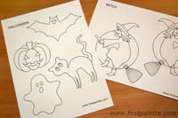
- Find an interesting Halloween-themed book to base your story from or write your own Halloween story. Draw a simple sketch of your characters
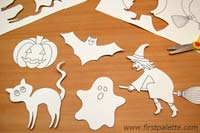
- Cut out the characters.
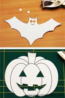
- Punch out or cut out the facial and character features that you want to emphasize. Typically these would be the eyes and mouth, but you can cut out other details such as stars on a wizard's hat or perhaps the letter on a superhero's chest.
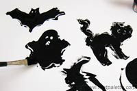
- Paint all the characters black.
*If you are drawing your characters, you may actually draw them onto black construction paper in Step 1. This will eliminate the painting step.
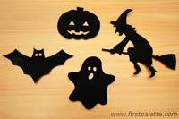
- Set your painted characters aside to dry.
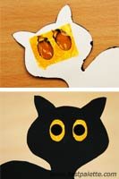
- If you want your character to have colored eyes, cut out a piece of cellophane paper just large enough to cover the eye area. Glue this at the back of your character's eyes.
For the irises, you may either glue on small round paper shapes (use a hole punch) or make dots with black puffy paint.
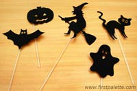
- Tape a transparent or white drinking straw at the back of each character. If your puppet needs an extra long handle, connect two drinking straws end-to-end.
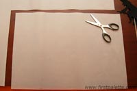
- To make the screen, look for a sheet of relatively thin white fabric or any thin white sheet of paper. If you're using paper, cut it to the desired size.
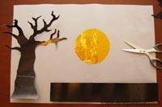
- Decide if your story setting needs any foreground elements on the screen. If it does, draw them on black construction paper and cut them out. You may add colored items by cutting them out from cellophane paper.
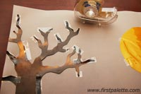
- Tape the foreground elements onto the screen.
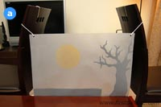
- Here are some set-up notes and tips, including photos of my set-up from (a.) the audience view point and (b.) the puppeteer's side.
- Stretch the screen taut with strings from the top corners.
a.) Audience's View
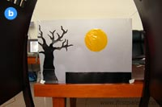
- b.) Puppeteer's View
- Use a tall table with ample room underneath for the puppeteers.
- The foreground elements on the screen should be facing the puppeteer's side.
- For a small screen, tape the bottom edge of the screen onto the table. A large fabric screen can be allowed to drape on the floor.
- Set up a lamp behind the screen.

- Finally, turn on the lamp and start your shadow puppet play!